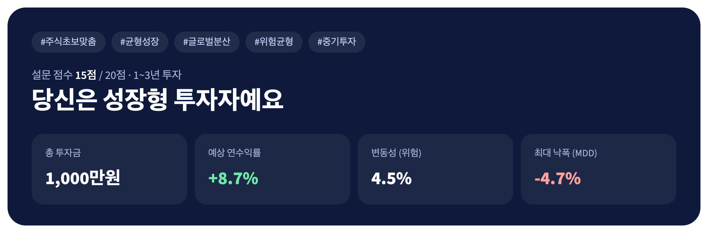
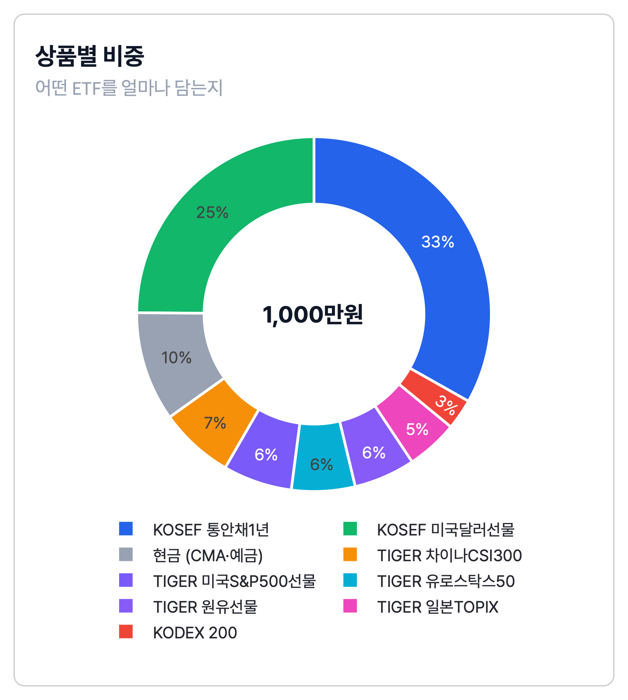
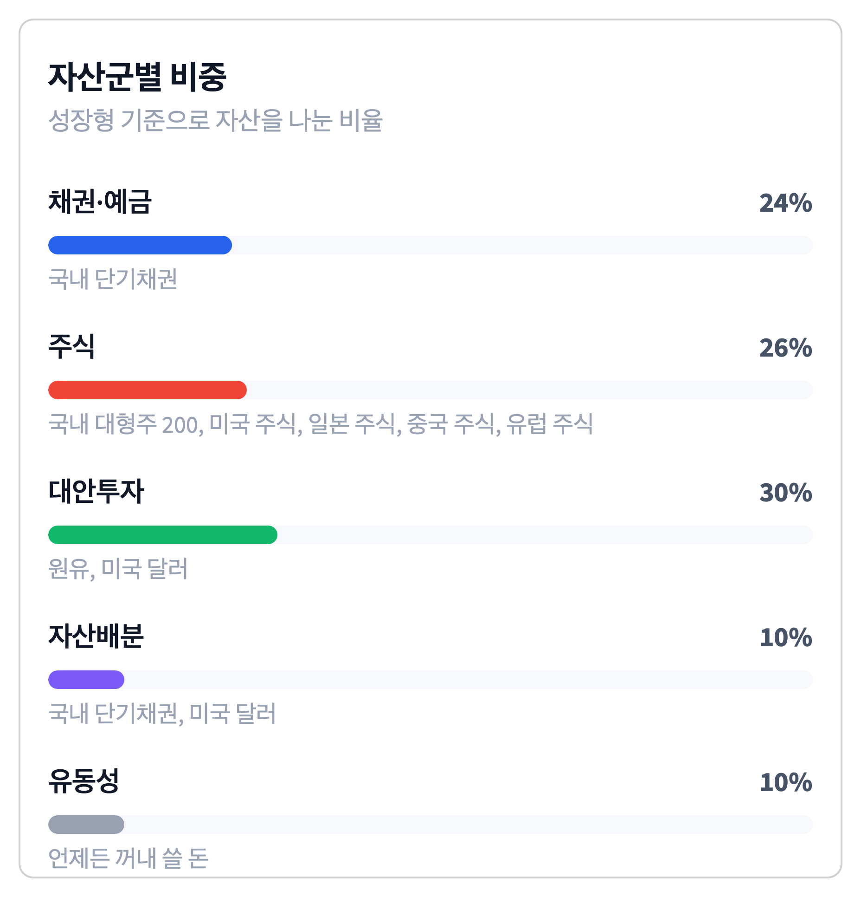
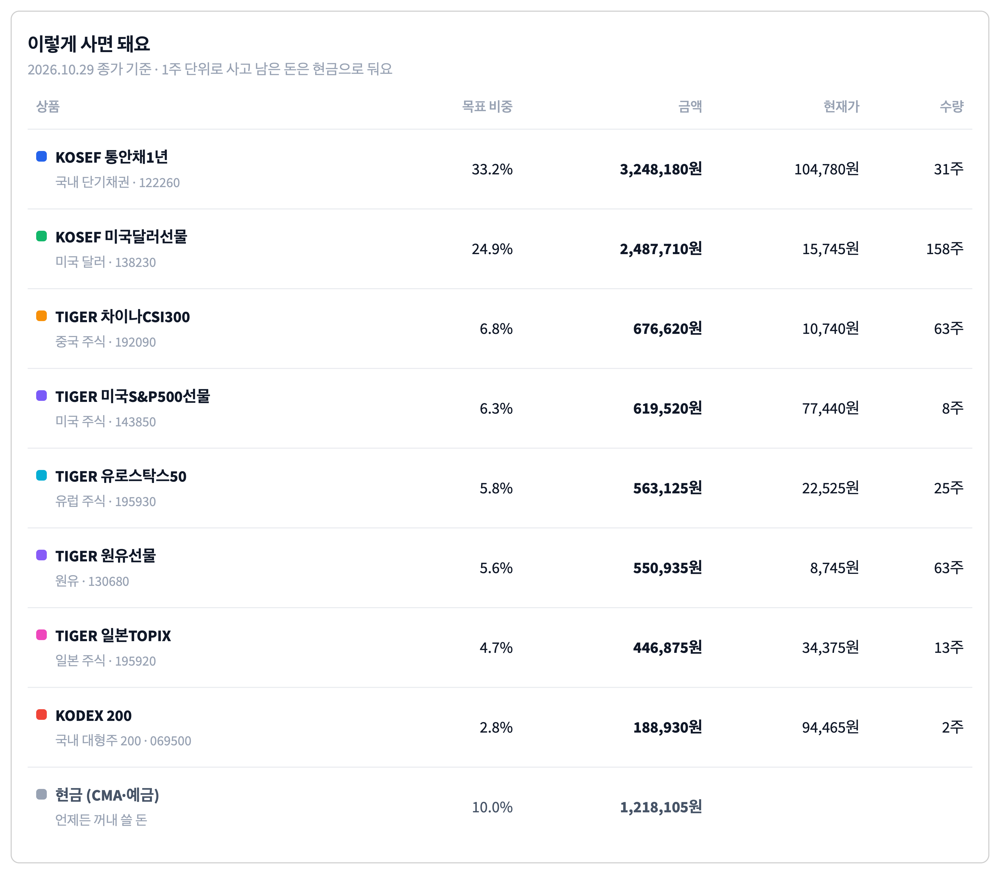
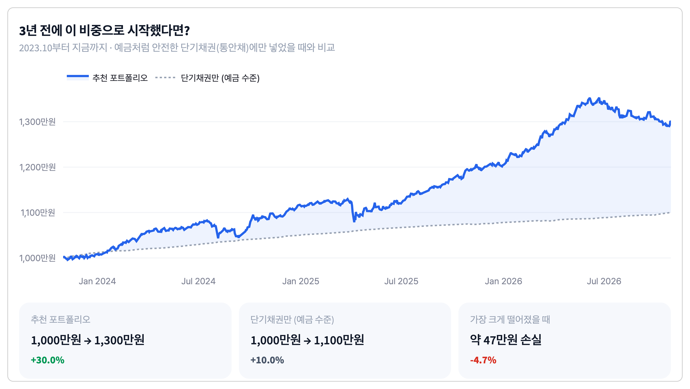
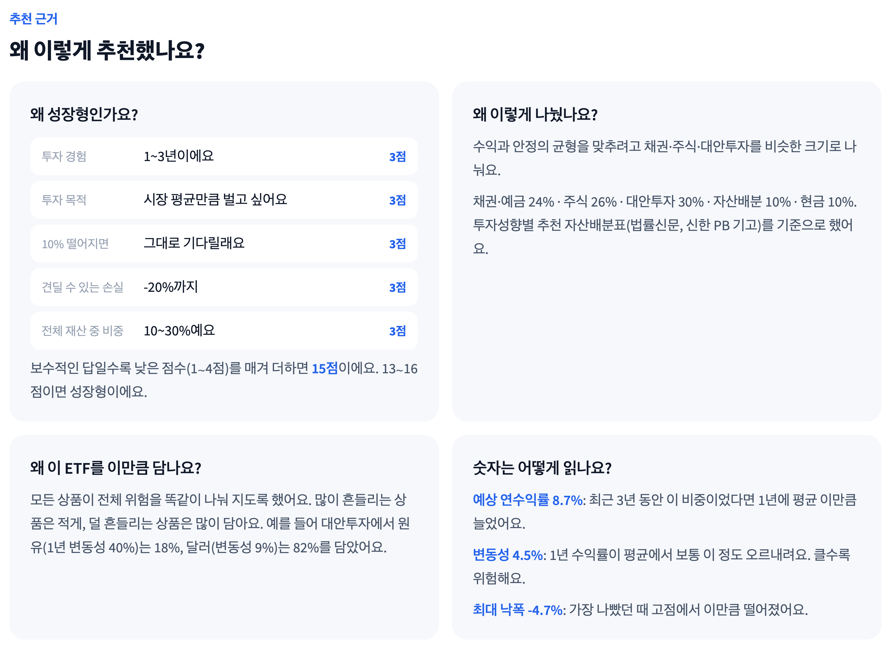

사이트 결과 화면을 위에서부터 차례로 보면서, 각 숫자가 어떤 강의 자료의 어떤 개념으로 계산됐는지 정리했어요. 예시는 1,000만원 · 1~3년 · 성장형(15점) 결과예요.
| 화면에 보이는 것 | 쓴 강의 개념 | 강의 자료 |
|---|---|---|
| ① 투자성향 · 해시태그 | 설문 점수제 (강의 개념 아님) | 팀 기획 · 팀 PDF |
| ② 연수익률 · 변동성 | 일간수익률, 연율화 ×240 · ×√240 | 금융통계 · 7주차 자산배분 |
| ③ 최대 낙폭 MDD | 누적성과, 고점 대비 최대 하락 | 9주차 성과평가 |
| ④ 상품별 비중 (도넛) | 공분산 행렬, 최소분산, 리스크 패리티, scipy 최적화 | 7주차 자산배분 · 6주차 최적화 |
| ⑤ 자산군별 비중 (막대) | 분산투자, 체계적 · 비체계적 위험 | 6주차 포트폴리오 · 팀 PDF |
| ⑥ 이렇게 사면 돼요 | FinanceDataReader, 최근 종가 iloc[-1] | 금융데이터처리 · 금융통계 |
| ⑦ 3년 전에 시작했다면? | 누적성과 index_100, 벤치마크 비교 | 9주차 성과평가 · 백테스팅 |
| ⑧ 왜 이렇게 추천했나요? | 위 ①~⑦을 사용자 말로 풀어 쓴 것 | — |
강의 자료 위치: 금융통계 = 01_기초/금융통계_2026.ipynb · 6주차 = 03_6주차 · 7주차 = 04_자산배분 · 9주차 = 05_성과평가_백테스팅
화면 위치: 결과 화면 맨 위 남색 카드

3 + 3 + 3 + 3 + 3 = 15점 → 성장형
화면 위치: 남색 카드 아래 숫자 4개 중 가운데 두 개
pct_change() = 어제 대비 오늘 몇 % 변했나daily_ret.std() * np.sqrt(240)mean() * 240연수익률은 "1년에 평균 얼마나 늘었나", 변동성은 "1년 수익이 평균에서 보통 얼마나 오르내리나"예요. 변동성이 클수록 위험해요.
예상 연수익률 8.7% · 변동성 4.5%
화면 위치: 숫자 4개 중 맨 오른쪽 · 성과 비교 카드의 "가장 크게 떨어졌을 때"
index_100 = (1 + ret).cumprod() * 100expanding().max() → 사이트는 같은 뜻의 cummax() 사용등산하다 가장 높은 곳에서 가장 깊은 골짜기까지 내려간 깊이예요. "최악의 순간에 얼마나 잃었나"를 보여줘요.
2026.6.22 고점 → 2026.10.22 저점, −4.7%
1,000만원이면 약 47만원이 줄어든 적이 있어요.
화면 위치: 결과 화면 왼쪽 카드 · 사이트의 핵심 계산

scipy.optimize.minimize, SLSQP, 'eq' 제약, bounds원유(변동성 40.2%)와 달러(9.0%) → 원유 = 9.0 ÷ (40.2 + 9.0) = 18.3%, 달러 81.7%
통안채 33% = 채권 24% × 100% + 자산배분 10% × 91.7%
화면 위치: 결과 화면 오른쪽 카드

서로 다르게 움직이는 자산을 섞으면 하나가 떨어질 때 다른 하나가 버텨 줘서 전체 흔들림이 줄어요. 다만 금리 · 경기처럼 시장 전체를 흔드는 체계적 위험은 섞어도 남고, 회사 하나의 사고 같은 비체계적 위험만 줄어요.
화면 위치: 차트 두 개 아래 표

fdr.DataReader(종목코드, 시작일)로 가격 받기data_p.iloc[-1]1,000만원 × 33.2% ≈ 331.7만원 → ÷ 104,780원 = 31.66 → 31주
화면 위치: 매수 목록 아래 그래프와 비교 카드 3개

index_100 = (1 + ret).cumprod() * 100추천(성장형) 1,000만원 → 1,300만원 · 단기채권만 → 1,100만원
화면 위치: 결과 화면 맨 아래 질문 카드 4개

| 카드 | 내용이 나온 곳 |
|---|---|
| 왜 성장형인가요? | ① 설문 점수제 (팀 기획) |
| 왜 이렇게 나눴나요? | ⑤ 팀 PDF 성향표 · 6주차 분산투자 |
| 왜 이 ETF를 이만큼 담나요? | ④ 7주차 리스크 패리티 / 최소분산 · 변동성은 금융통계 std × √240 |
| 숫자는 어떻게 읽나요? | ② 연율화 · ③ MDD |
카드 아래 "계산 방법 자세히 보기 (수업 내용)"를 펼치면 수식과 자산군 안 비중 표가 나와요.
발표 때 질문이 나올 수 있는 부분
| 항목 | 강의 방식 | 사이트 방식 |
|---|---|---|
| 최소분산 · 리스크 패리티 | scipy SLSQP, 비중합 1 | 같아요 (공매도 금지는 bounds 0~1로) |
| 연수익률 · 변동성 | 7주차: 일간 × 240 / 9주차: 주간 × √52, CAGR | 7주차 방식 (일간 × 240, × √240) |
| 누적성과 · MDD | index_100, expanding max | 같아요 (cummax = expanding max) |
| 백테스팅 | 리밸런싱 시점마다 비중 다시 계산 (cal_nav) | 최근 3년 비중을 그대로 적용한 단순 계산 |
| 샤프지수 | (수익률 − 무위험) ÷ 표준편차 | 계산은 하지만 화면엔 아직 없음 |
설문 점수제 · 성향별 비율 숫자(2006년 기사) · 해시태그 규칙 · 예산을 수량으로 바꾸는 계산은 팀이 정한 서비스 설계예요.
9주차 cal_nav로 진짜 백테스팅 · 7주차 효율적 프론티어 그래프에 "내 포트폴리오" 표시 · 샤프지수 화면 표시
교육용 시뮬레이션이며 투자 권유가 아니에요 · 사이트: first-portfolio.streamlit.app